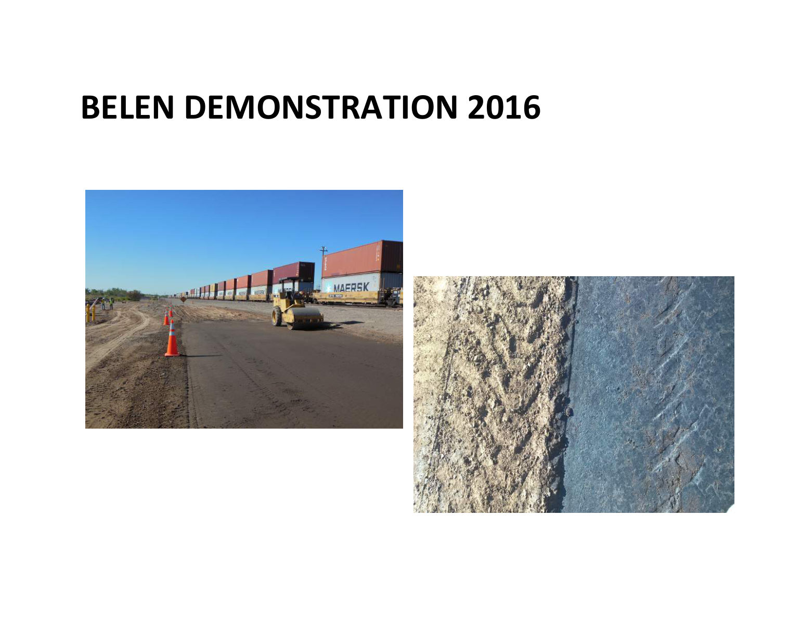
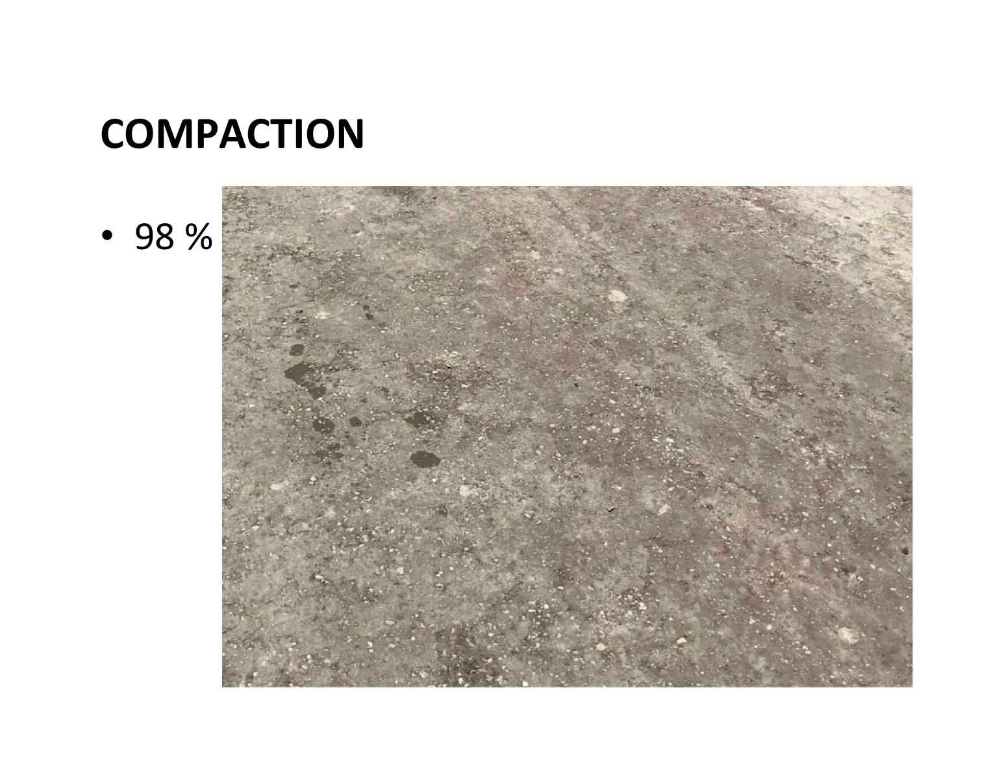
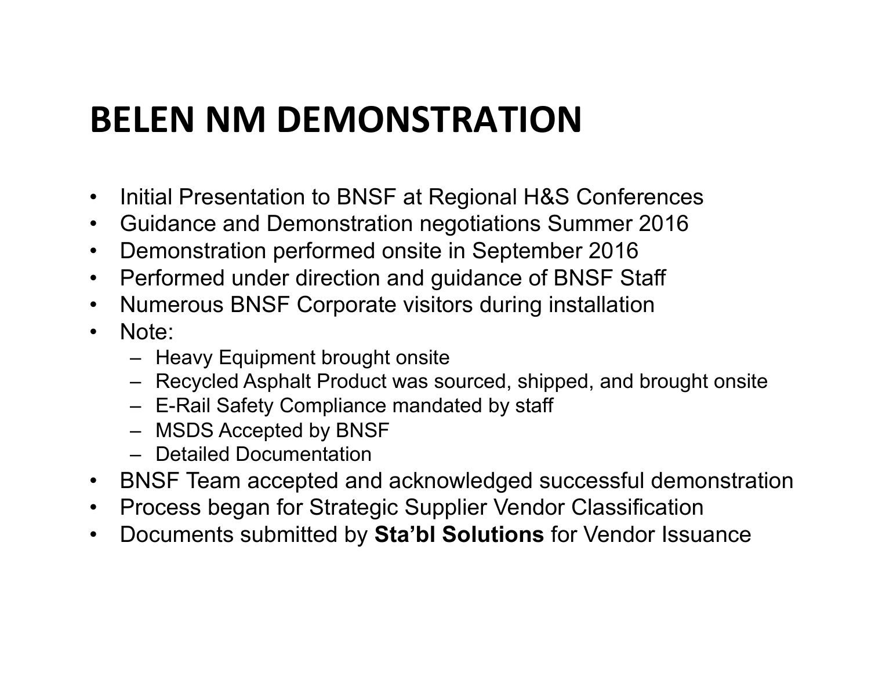
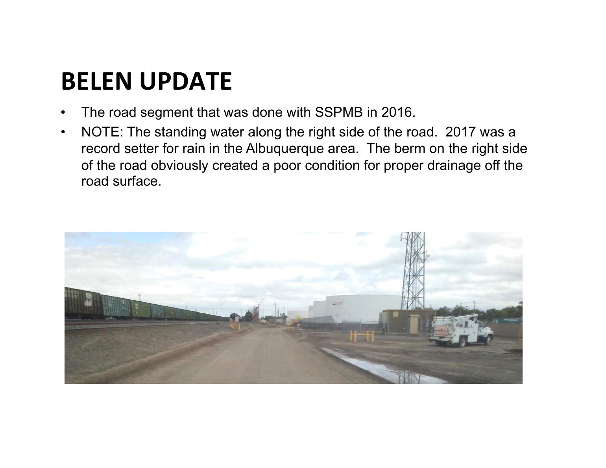
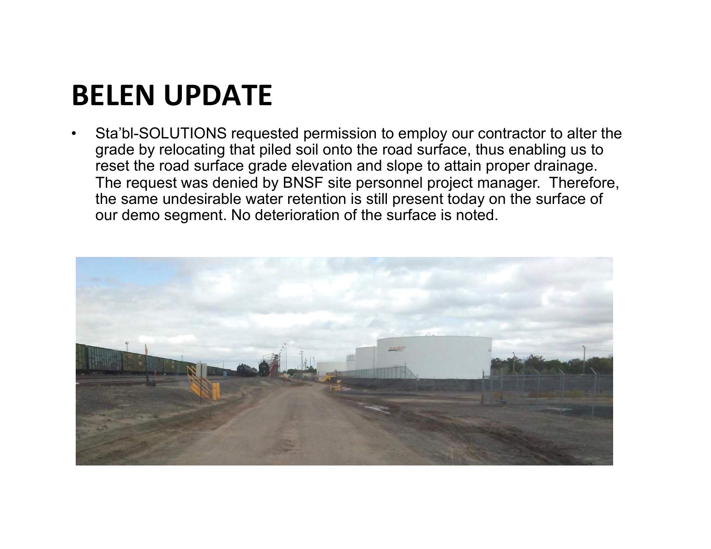
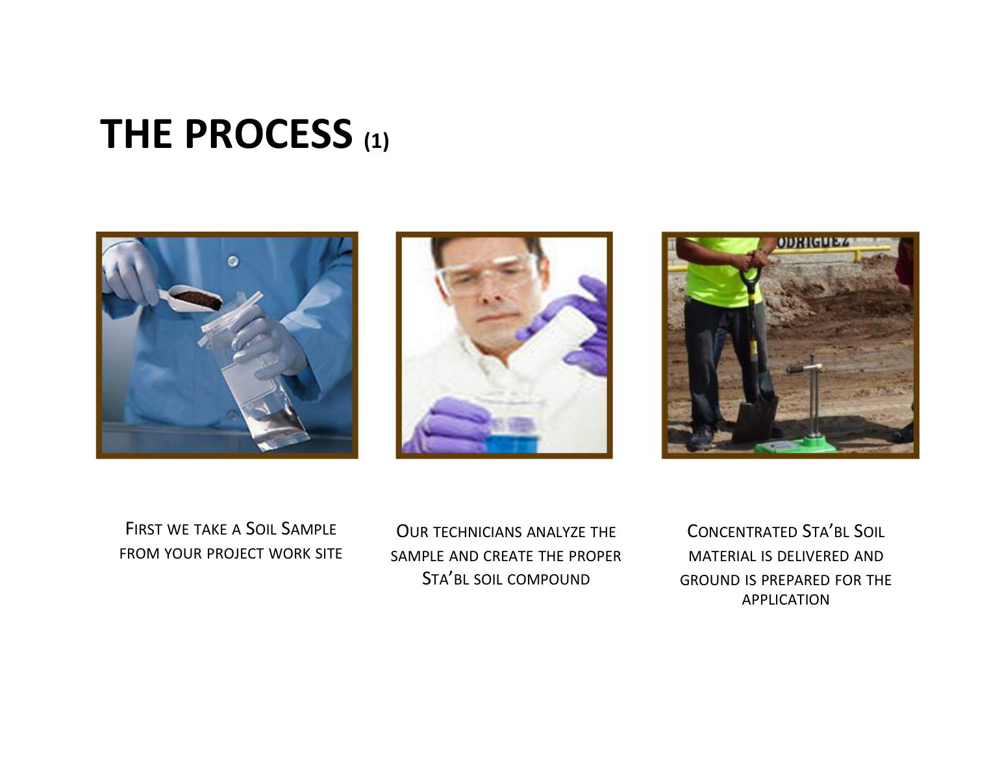
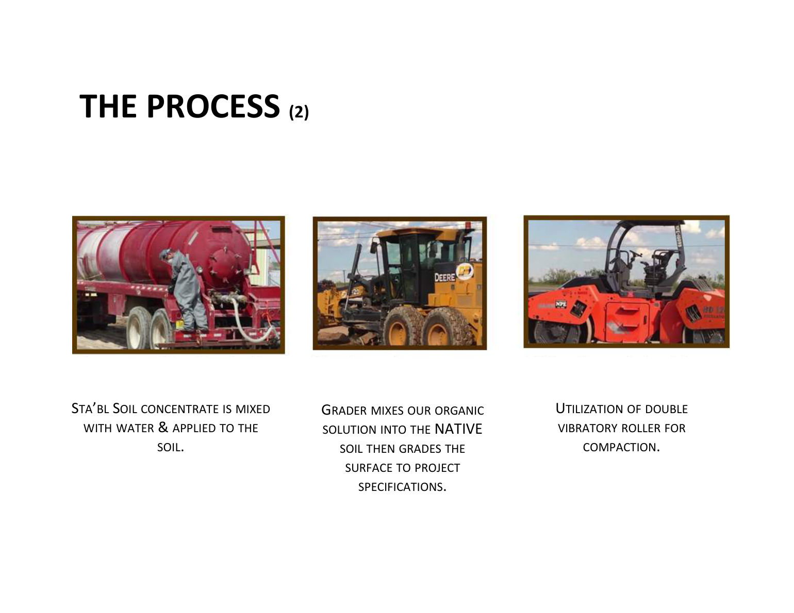
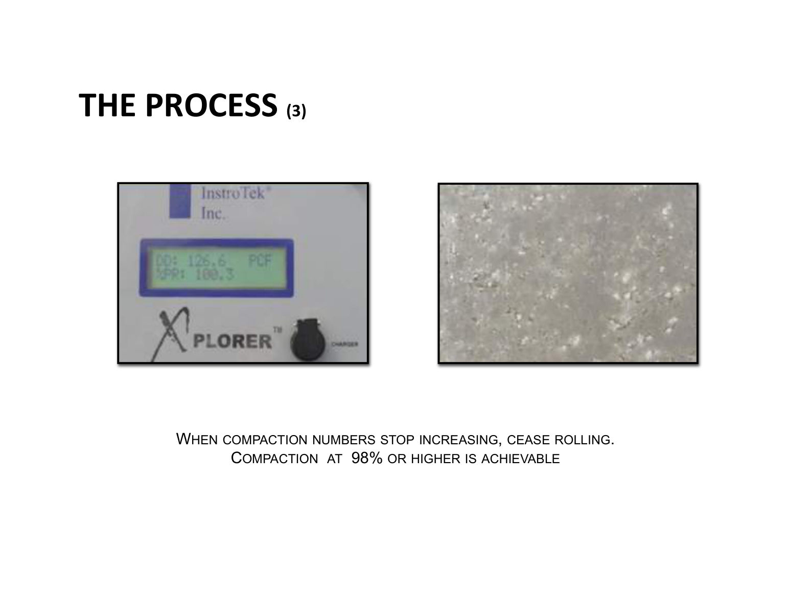
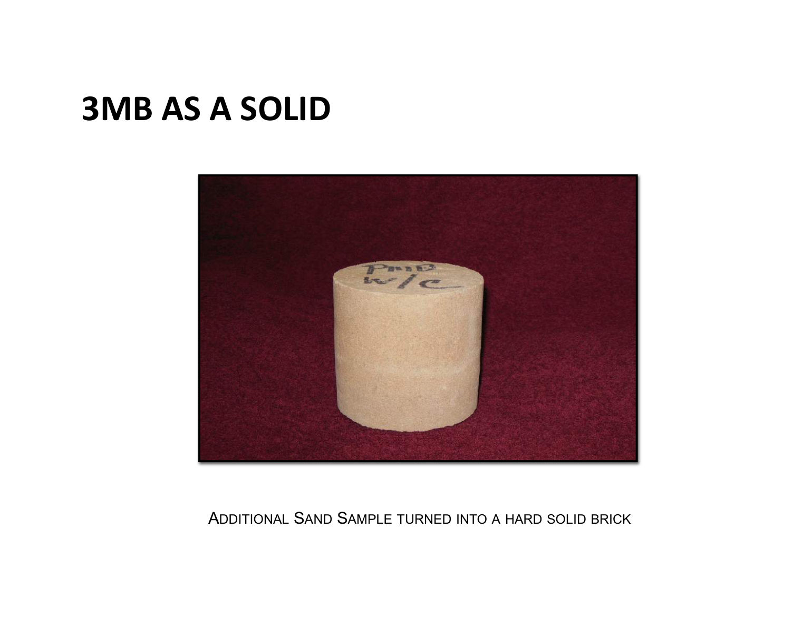

In September 2016, under the direction of BNSF Railway staff, a road segment at the Belen, New Mexico intermodal terminal was rebuilt with recycled asphalt product bound with the densifying liquid. Thirteen months later, after a record rain year, the vendor's follow-up inspection found the surface intact with no maintenance applied.
The engagement began at BNSF regional health-and-safety conferences, with demonstration negotiations through the summer of 2016. The installation itself ran in September 2016 at the Belen Terminal: heavy equipment onsite, recycled asphalt product (RAP) sourced and shipped in, E-Rail Safety compliance, and the product MSDS reviewed and accepted by BNSF. The deck records numerous BNSF corporate visitors during installation, and that the BNSF team "accepted and acknowledged successful demonstration."



In October 2017, after what the deck describes as a record rain year in the Albuquerque area, the vendor revisited the road. Standing water sat along the right edge: an existing spoil berm blocked drainage, the vendor asked to regrade it, and BNSF's site project manager declined. The surface itself is reported intact: no additional maintenance applications over the treated area, and no deterioration of the surface noted, with the ponding condition disclosed by the vendor's own report rather than hidden.


The deck closes with the standard three-step process. The density-gauge photograph is the only hard measurement image in the deck: an InstroTek Xplorer nuclear density gauge reading 126.6 PCF dry density at 100.3% Proctor, alongside the working rule that rolling stops when compaction numbers stop climbing. The deck presents this as process illustration; it does not explicitly tie that reading to the Belen segment.



